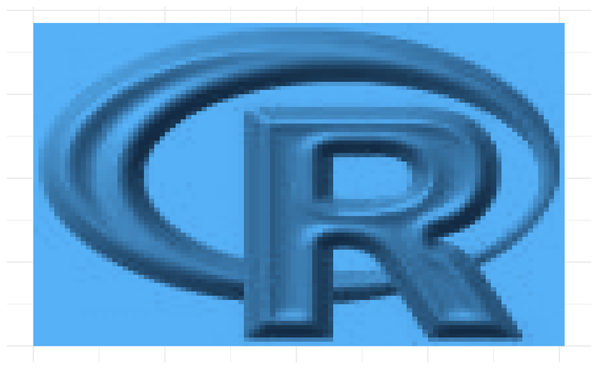
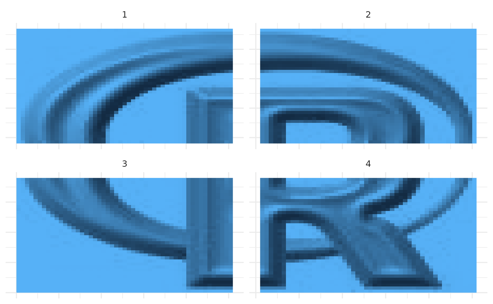
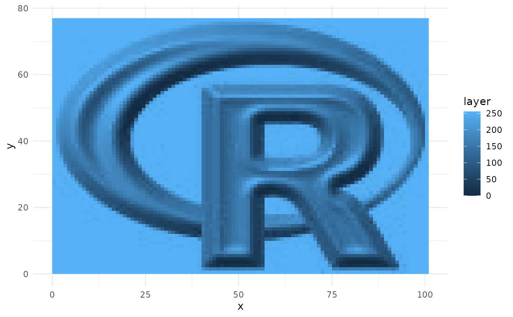
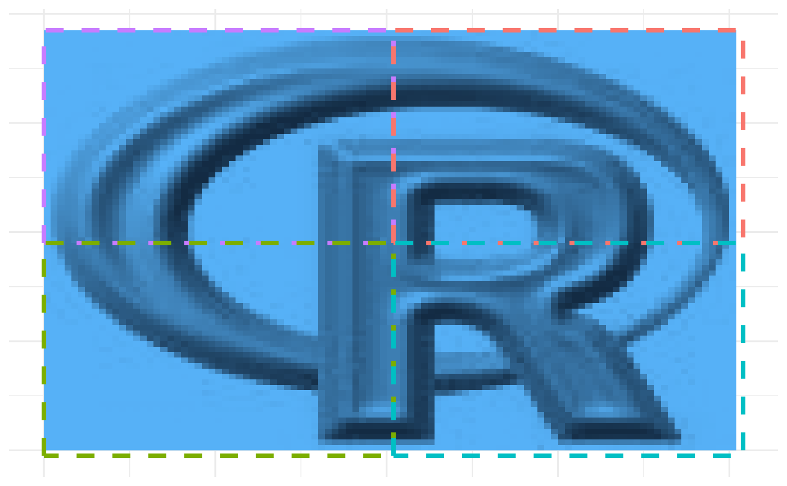

Split a raster object into a list of smaller rasters based on specified numbers of rows and columns. It can optionally save the resulting rasters to disk, plot them, or return just their extents.
Usage
split_raster(
raster = NULL,
n_columns = 4L,
n_rows = 4L,
save = FALSE,
save_path = "",
plot = FALSE,
extent_only = FALSE
)Arguments
- raster
A raster object to be split. If
NULL(the default), the function will not execute.- n_columns, n_rows
Integer. The desired number of columns and rows to split the raster into. Default is 4 columns and 4 rows.
- save
Logical. Whether to save the split rasters to disk. Default is
FALSE.- save_path
Character. Directory path where the split rasters should be saved if
saveisTRUE. If the directory does not exist, it will be created.- plot
Logical. Whether to plot the split rasters. Default is
FALSE.- extent_only
Logical. If
TRUE, the function returns only the extents of the split rasters instead of the raster data. Default isFALSE.
Value
A list of raster objects or extents of the split rasters, depending
on the value of the extent_only parameter.
Examples
load_packages(raster, ggplot2, purrr)
# set ggplot2 theme
ggplot2::theme_set(
ggplot2::theme_minimal(base_size = 12) +
ggplot2::theme(
legend.position = "none",
axis.title = ggplot2::element_blank(),
axis.text = ggplot2::element_blank(),
axis.ticks = ggplot2::element_blank()))
# example raster
logo <- raster::raster(system.file("external/rlogo.grd", package = "raster"))
ggplot2::ggplot() +
ggplot2::geom_raster(
data = as.data.frame(logo, xy = TRUE),
ggplot2::aes(x = x, y = y, fill = red)) +
ggplot2::scale_fill_gradient()

# --------------------------------------------------
# Split into 2 rows and 2 columns
logo_split <- split_raster(
raster = logo, n_columns = 2, n_rows = 2, plot = FALSE)
# plotting
plot_df <- purrr::map_dfr(
.x = seq_len(length(logo_split)),
.f = ~ {
as.data.frame(logo_split[[.x]], xy = TRUE) %>%
dplyr::mutate(tile = .x)
})
ggplot2::ggplot() +
ggplot2::geom_raster(
data = plot_df, ggplot2::aes(x = x, y = y, fill = red)) +
ggplot2::facet_wrap(~tile, scales = "free") +
ggplot2::scale_fill_gradient()

# --------------------------------------------------
# Merging split maps again
logo_split$fun <- mean
logo_split$na.rm <- TRUE
logo_split2 <- do.call(mosaic, logo_split)
# Plotting
ggplot2::ggplot() +
ggplot2::geom_raster(
data = as.data.frame(logo_split2, xy = TRUE),
ggplot2::aes(x = x, y = y, fill = layer)) +
ggplot2::scale_fill_gradient() +
ggplot2::theme_minimal()

# No value difference!
print({logo_split2 - logo})
#> class : RasterLayer
#> dimensions : 77, 101, 7777 (nrow, ncol, ncell)
#> resolution : 1, 1 (x, y)
#> extent : 0, 101, 0, 77 (xmin, xmax, ymin, ymax)
#> crs : +proj=merc +lon_0=0 +k=1 +x_0=0 +y_0=0 +datum=WGS84 +units=m +no_defs
#> source : memory
#> names : layer
#> values : 0, 0 (min, max)
#>
# --------------------------------------------------
(logo_extents <- split_raster(
logo, n_columns = 2, n_rows = 2, extent_only = TRUE))
#> [[1]]
#> class : Extent
#> xmin : 0
#> xmax : 51
#> ymin : 38
#> ymax : 77
#>
#> [[2]]
#> class : Extent
#> xmin : 51
#> xmax : 102
#> ymin : 38
#> ymax : 77
#>
#> [[3]]
#> class : Extent
#> xmin : 0
#> xmax : 51
#> ymin : -1
#> ymax : 38
#>
#> [[4]]
#> class : Extent
#> xmin : 51
#> xmax : 102
#> ymin : -1
#> ymax : 38
#>
# plotting
ext_rect <- purrr::map_dfr(
.x = seq_len(length(logo_extents)),
.f = ~ {
ext <- logo_extents[[.x]]
data.frame(
xmin = ext@xmin, xmax = ext@xmax,
ymin = ext@ymin, ymax = ext@ymax,
tile = .x, color = colors()[.x])
})
ggplot2::ggplot() +
ggplot2::geom_raster(
data = as.data.frame(logo, xy = TRUE),
ggplot2::aes(x = x, y = y, fill = red)) +
ggplot2::geom_rect(
data = ext_rect,
ggplot2::aes(
xmin = xmin, xmax = xmax, ymin = ymin, ymax = ymax,
group = tile, color = color),
fill = NA, linewidth = 1.4, linetype = "dashed")
